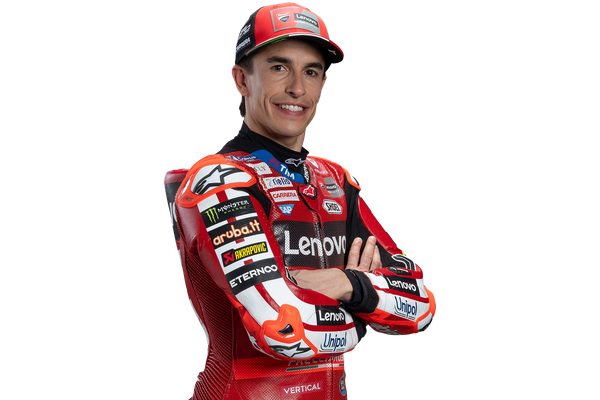
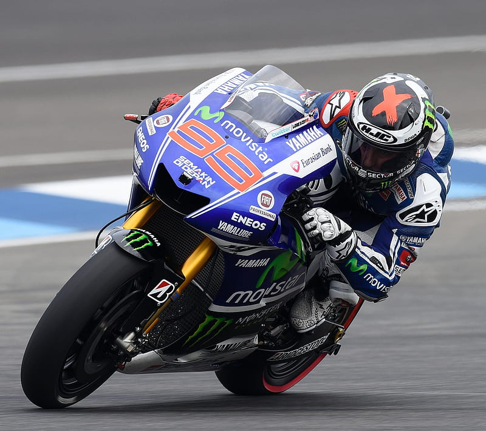
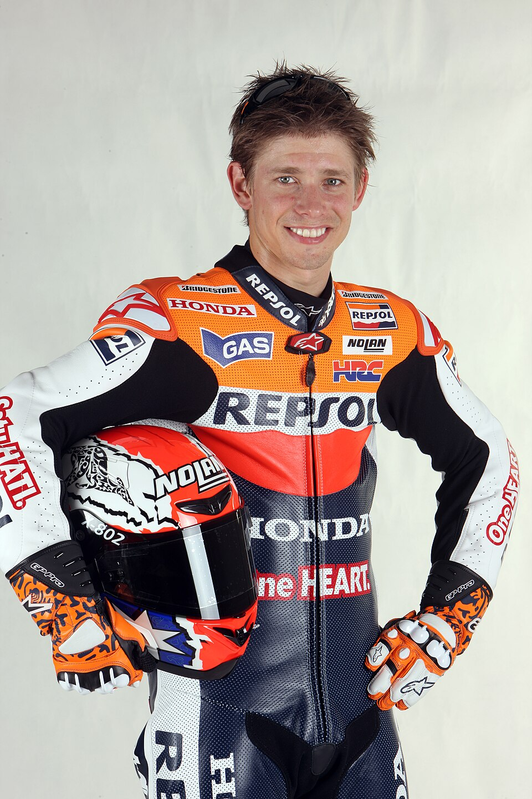

Legends of MotoGP
Valentino Rossi is one of the greatest riders of all time. He is known for his strategic, experienced, and adaptable riding style.

Marc Márquez is a champion of the modern era. He is aggressive, fearless, and extremely fast, often pushing the bike to its limits.

Jorge Lorenzo is a multiple-time world champion. His style is smooth, clean, and very precise, focusing on perfect racing lines.

Casey Stoner is one of the most naturally talented riders. He is known for his speed, instinct, and ability to control difficult bikes.
